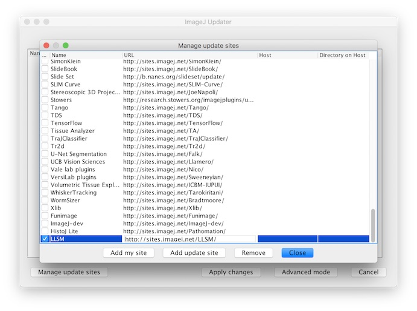

Preprocessing of LLS Data
LLS data typically requires some preprocessing before it can be visualised, analysed or processed further. Preprocessing usually encompasses deskewing and capture of important metadata that it useful for downstream applications. More information about deskewing LLS data can be found here.
llsm provides several plugins for ImageJ/Fiji that enable preprocessing LLS
data. The main features of these plugins include:
- Reading and parsing LLS metadata from raw LLS data from the Janelia LabView application.
- Reading LLS raw data from the Janelia LabView application.
- Deskewing LLS volumes.
- Previewing LLS datasets as ImageJ HyperStacks or in the BigDataViewer.
- Exporting or conversion of LLS dataset to OME-TIFF or BigDataViewer HDF5 formats.
The plugins cover two primary use cases at this time, although we wish to support more in the future:
- Process and preview LLS datasets
- Process and convert LLS datasets to OME-TIFF or BigDataViewer HDF5 formats
Note: While we aim to support other LLS microscope implementations in the future, the
llsm tools currently only support datasets acquired using the Janelia LLS
acqusition software. The plugins typically operate directly on the raw data
structure generated from the Janelia LLS acquisition software. If you are interested in guidelines for acquiring LLS datasets
proceed here or if you are interested in developing or using
llsm libraries proceed here.
Installing the ImageJ/Fiji Plugins
There is an ImageJ/Fiji update site for llsm, so installing the plugins is
relatively straight forward:
-
Download and install Fiji.
-
Add and enable the
llsmFiji Update Site:- Open the Fiji updater: Help → Update …
- Click “Manage update sites”
-
Click “Add update site” and enter the
llsmupdate site with the following parameters:Name: LLSM
URL: http://sites.imagej.net/LLSM/

- Ensure it is enabled and click “Close”
- Check that ‘plugins/llsm-ij.jar’ appears with the status “Install It” in the updater dialog
- Click ‘Apply Changes’
-
Restart Fiji.
-
Verify that you have an
LLSMsubmenu under the Plugins menu in Fiji.